勇敢的心 世界超级跑车及其引擎大全
都在为超级跑车而着迷吧？！其实车，不管其外表多么华丽，气势多么逼人都离不开一颗好的心脏——引擎！如果没有一部好引擎，即使它的外表在怎么漂亮，也只能算是坨废铁！一部真正的好车，一定是可以被称为“移动的艺术品”的！超级跑车其实也是可以分类的，个人认为其实可以从外表把它们为两类，一类为“内敛型”，另一类为“奔放型”。那么，先就来看看“内敛型”的。
Bentley Continental GT
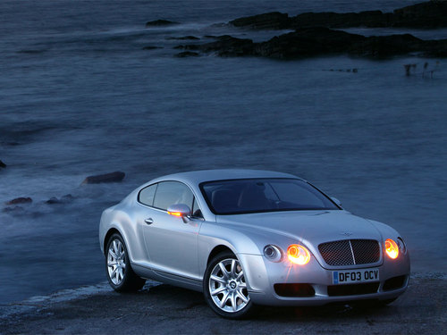 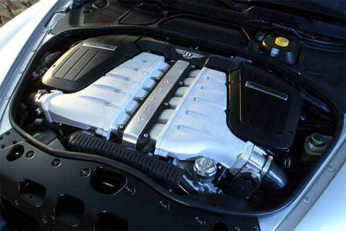Porsche 911 Turbo
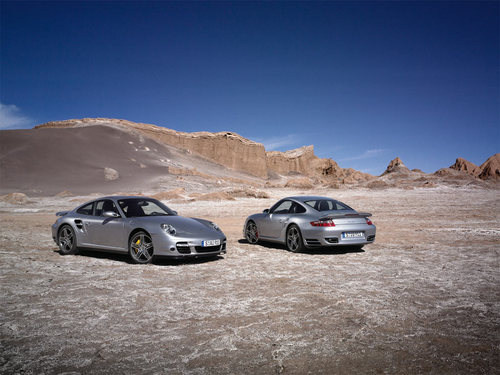 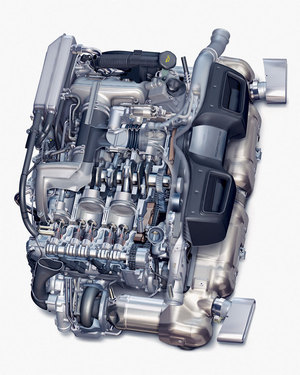 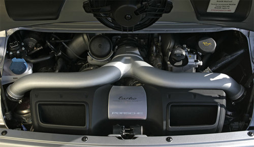 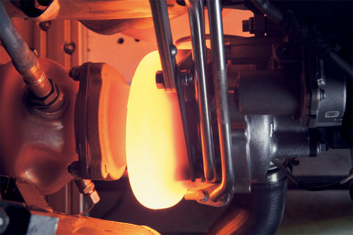 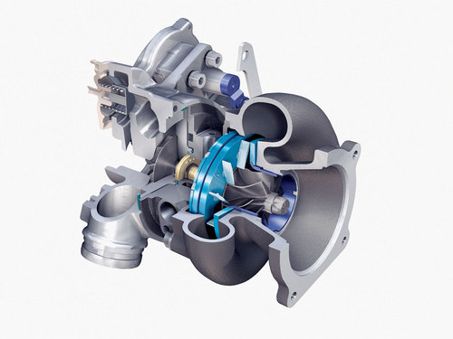Ferrari 599 GTB
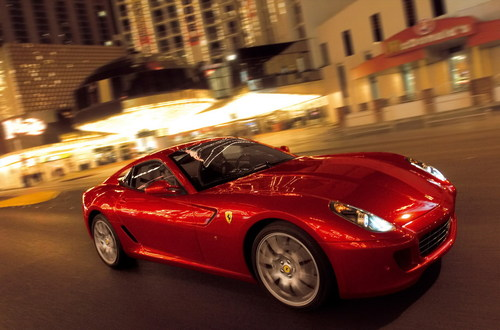 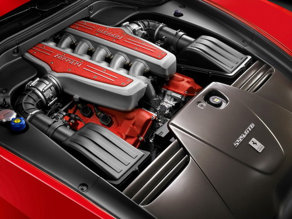 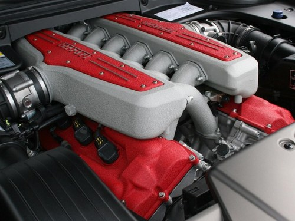Ascari KZ1
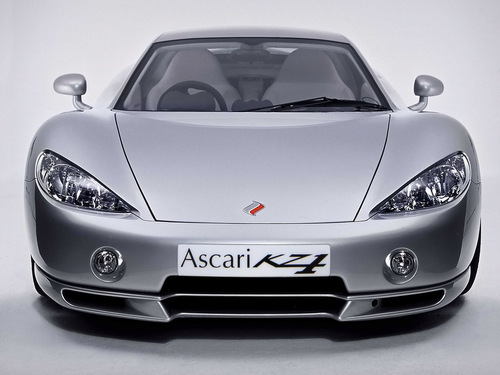 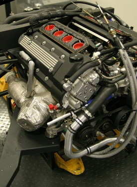 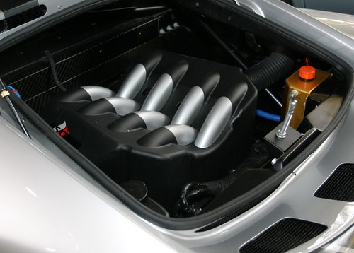 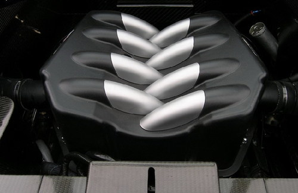Aston Martin Vanquish S
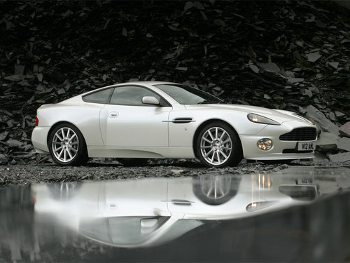
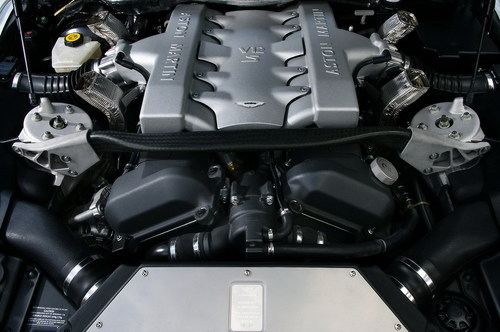
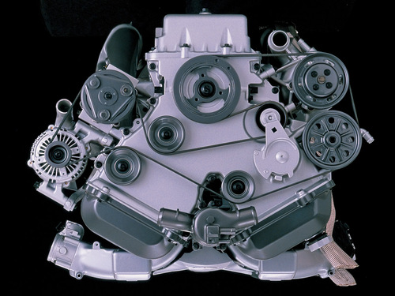
Acura NSX (Honda)
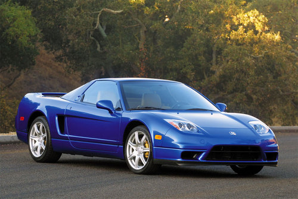
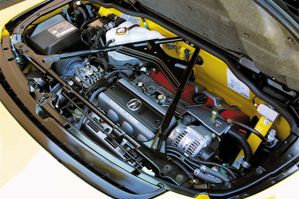
注：NSX绝对是辆好车，称其为“超级跑车”绝不为过！
Mercedes-Benz SLR McLaren 722 Edition
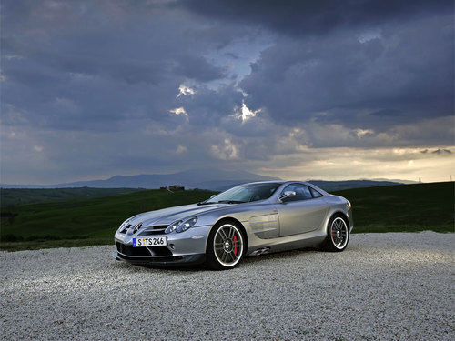 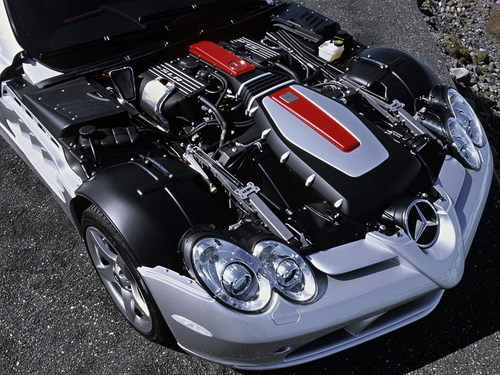 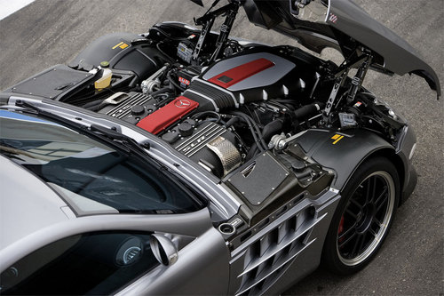 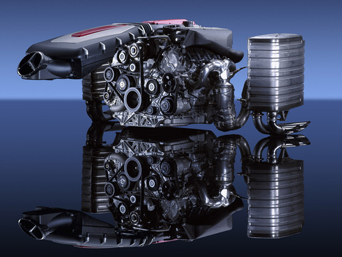Ford GT
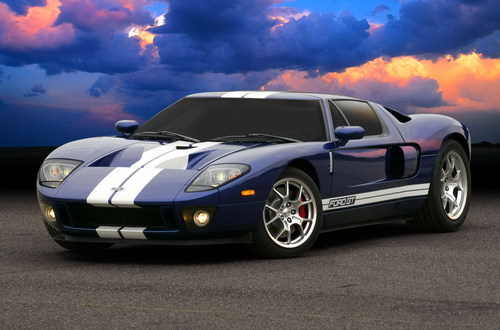 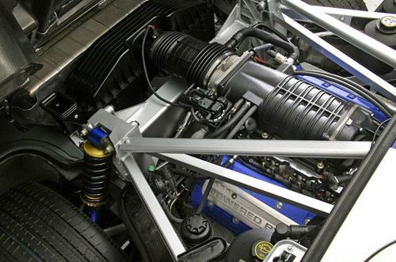 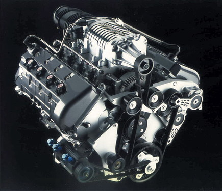Koenigsegg CCR
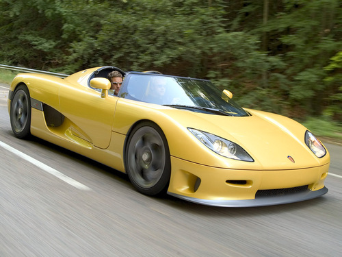 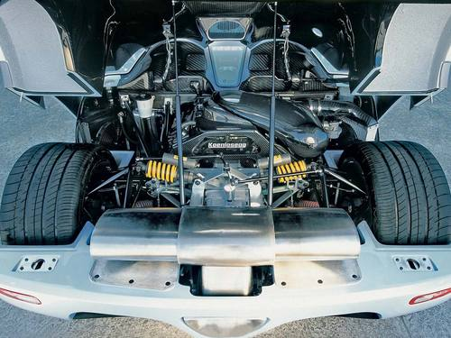McLaren F1
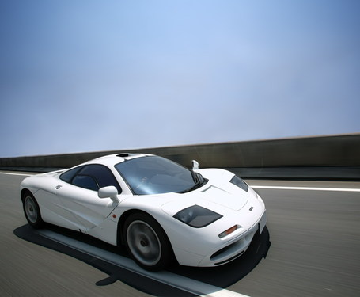 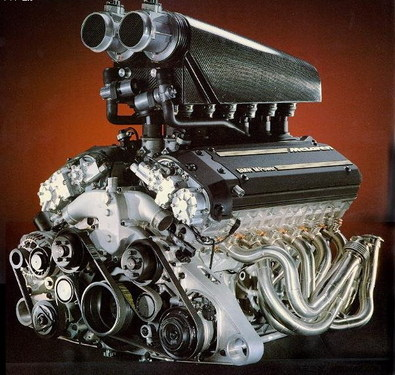Dodge Viper SRT-10
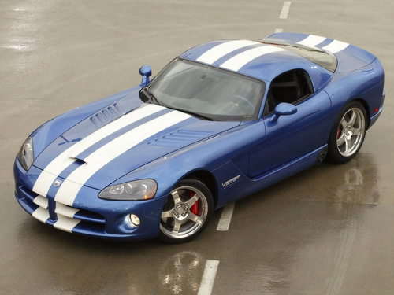 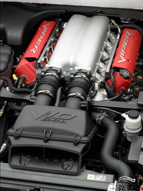Zonda Roadster F
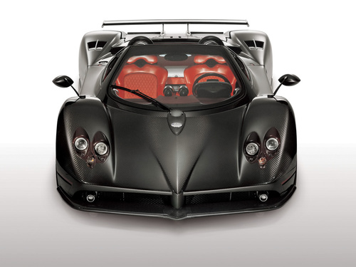 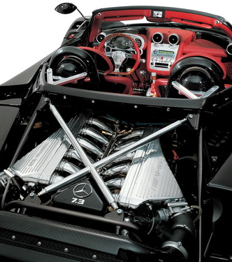 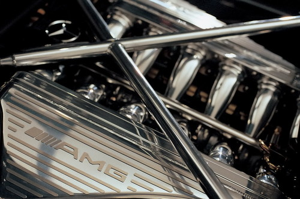Audi R8
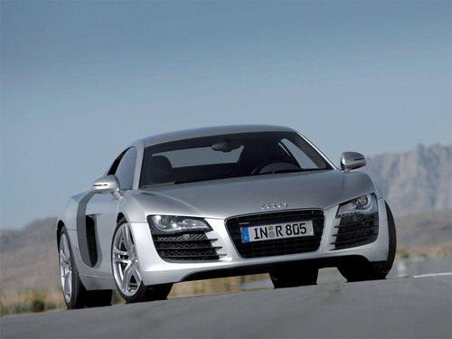 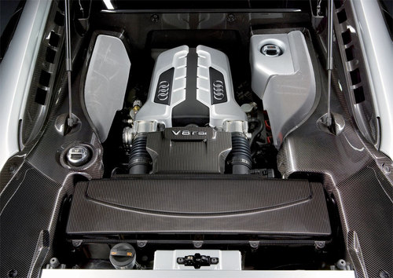 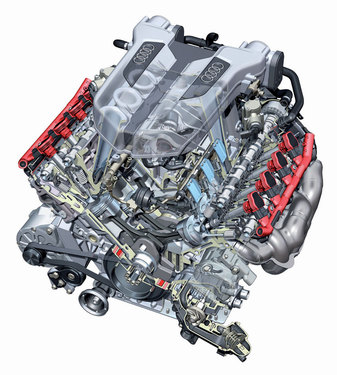SSC Ultimate Aero TT
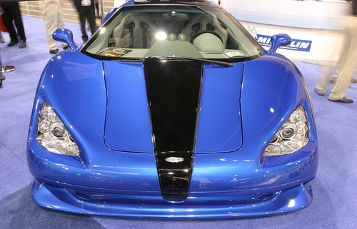 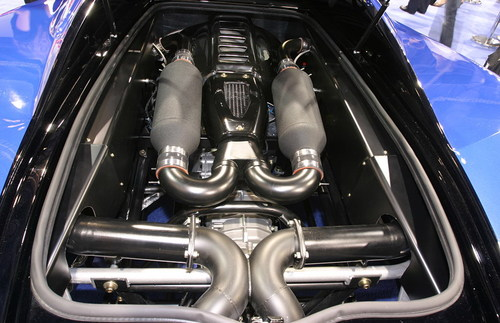 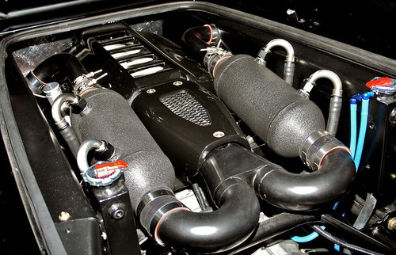Spyker C8 Spyder
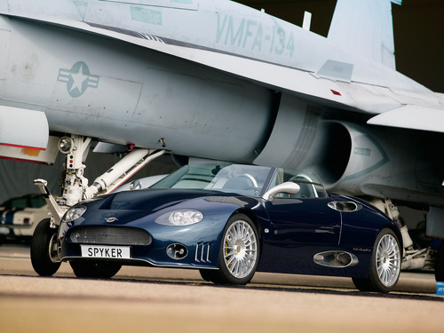 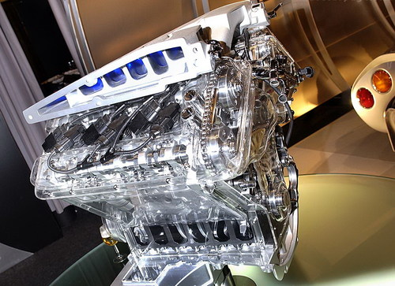 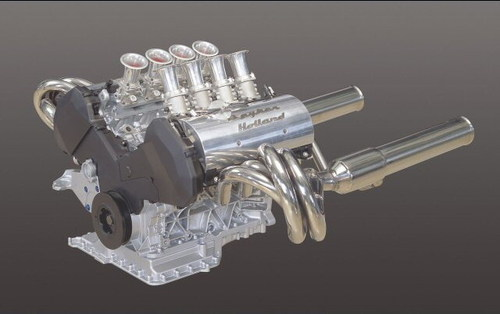Porsche Carrera GT
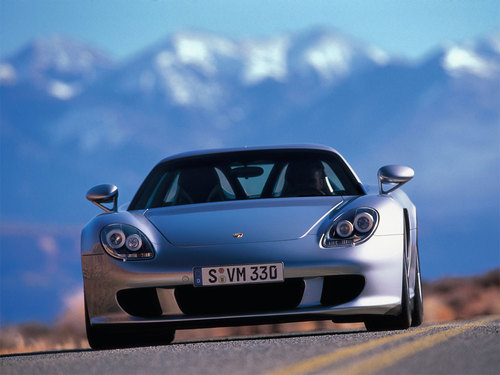 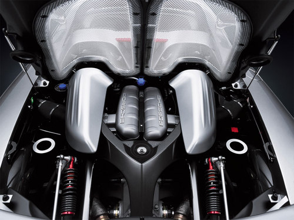 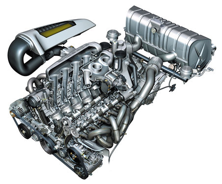Saleen S7 Twin Turbo
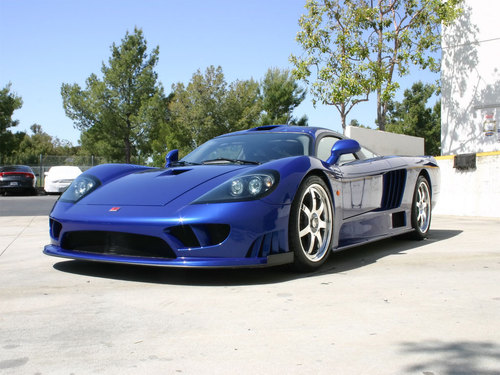 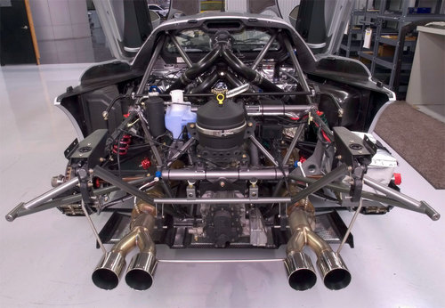Ferrari Enzo
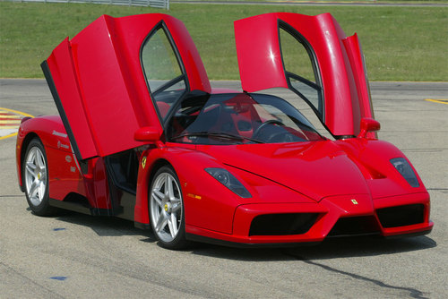 Lamborghini Murcielago LP640
Lamborghini Murcielago LP640

Bugatti Veyron 16/4
Maserati MC 12
严格说来，下面的这类车都算不上是超级跑车，但它们的引擎性能都太出色了，通过改装之后，它们绝对能晋升为合格的超跑！这些车的名气都很大哦！
Saab 9-3 Sport Sedan Aero
Nissan 350Z GT-S
Shelby Cobar GT500

Mitsubishi LAN EVO IX
Subaru Impreza WRX STI
Chevrolet Corvette Z06
Peugeot 407

Mazda RX7
注：MAZDA独有的转子发动机，相当的有特色！